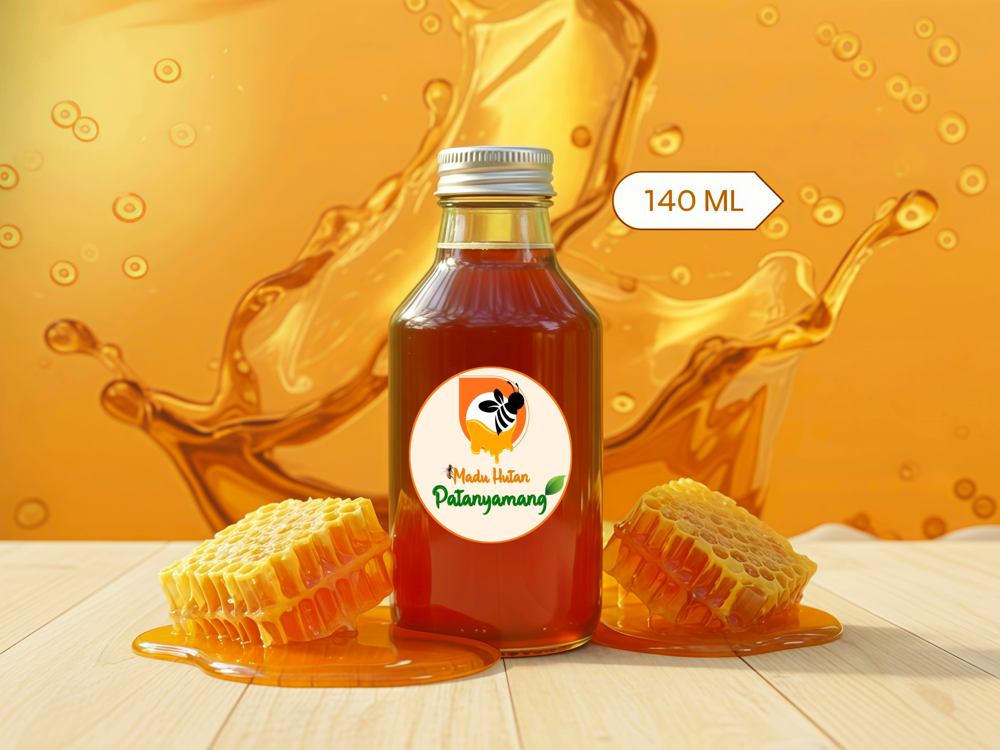
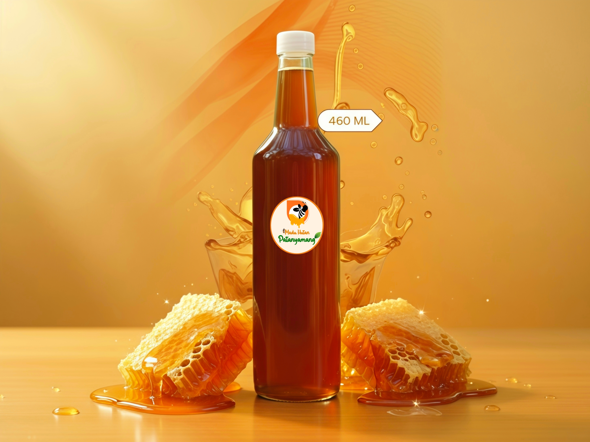

Selamat Datang di Galeri Perjalanan
rhmtmuhmmdd
Mendaki · Menjelajah · Mengabadikan
Perjalanan
Pilih tahun untuk melihat ekspedisi
Klik tahun untuk mulai →
Mari Terhubung & Jelajahi Bersama
Punya pertanyaan, ingin berkolaborasi, atau sekadar ingin ngobrol soal petualangan? Hubungi kami — kami selalu terbuka untuk koneksi baru.
Lokasi
Sulawesi Selatan, Indonesia
@rhmtmuhmmdd
"Setiap perjalanan besar dimulai dari satu pesan."
Shop
Madu Alami dari Sumber Terpercaya
Madu hasil panen keluarga, langsung dari sumbernya. Dipilih dengan teliti, murni secara alami, dan siap dipesan.

Madu Hutan Patanyamang 140Ml
Rp 50.000
Madu hutan asli, dipanen langsung dari hutan Desa Patanyamang. Murni tanpa campuran, praktis untuk konsumsi harian.
💬 Order via Instagram DM
Madu Hutan Patanyamang 460Ml
Rp 150.000
Madu hutan asli, dipanen langsung dari hutan Desa Patanyamang. Murni tanpa campuran, praktis untuk konsumsi harian.
💬 Order via Instagram DMBundle Madu Hutan Patanyamang (2 x 460ml)
Rp 250.000
Dua botol madu hutan asli dari Desa Patanyamang. Lebih hemat untuk stok keluarga (harga normal Rp 300.000).
💬 Order via Instagram DMTentang Saya
Saya memiliki ketertarikan mendalam pada eksplorasi gunung dan alam bebas.
Bagi saya, eksplorasi dibangun di atas persiapan, disiplin, dan kemauan untuk terus berkembang dari setiap pengalaman.
Setiap perjalanan mencerminkan komitmen terhadap tanggung jawab, rasa hormat pada alam, dan pertumbuhan jangka panjang.
Nilai Inti
Disiplin
Konsistensi, persiapan matang, dan kekuatan mental dalam setiap pendakian.
Tanggung Jawab
Menghormati alam dan memahami dampak dari setiap tindakan.
Ketahanan
Tetap kuat menghadapi tantangan, cuaca buruk, dan ketidakpastian.
Pertumbuhan
Belajar dari setiap jalur, setiap puncak, dan setiap pengalaman.
Koleksi Momen
Galeri Kedua
Sisi lain dari setiap perjalanan. Ketuk foto untuk memperbesar, atau cari destinasi favoritmu.
Destinasi tidak ditemukan. Coba kata lain ya 🏔️